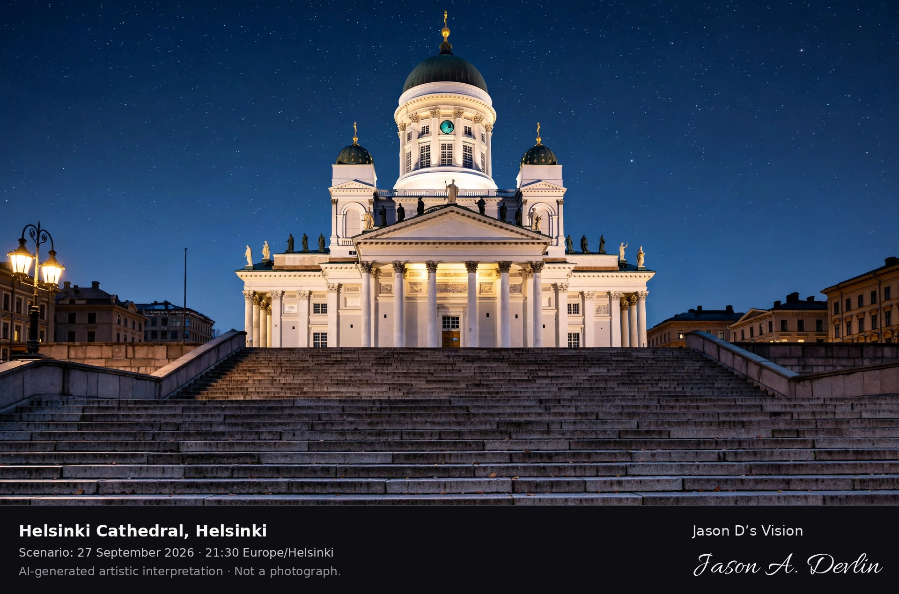

FI-01-001Approved
Helsinki Cathedral, Helsinki
Scenario: 27 September 2026 · 21:30 Europe/Helsinki
White neoclassical cathedral with green central dome and four corner towers rising above Senate Square, viewed from the square's lower steps looking up the staircase
The floodlit white cathedral rises above Senate Square on its broad stone staircase, its green dome and apostle statues glowing against a starry late-September sky. From the square's lower steps the neoclassical facade fills the frame — colonnaded portico below, corner towers flanking the central dome, warm lamplight spilling from the square's edges. A candid night view of Helsinki's most recognizable landmark, captured under clear skies at 21:30.